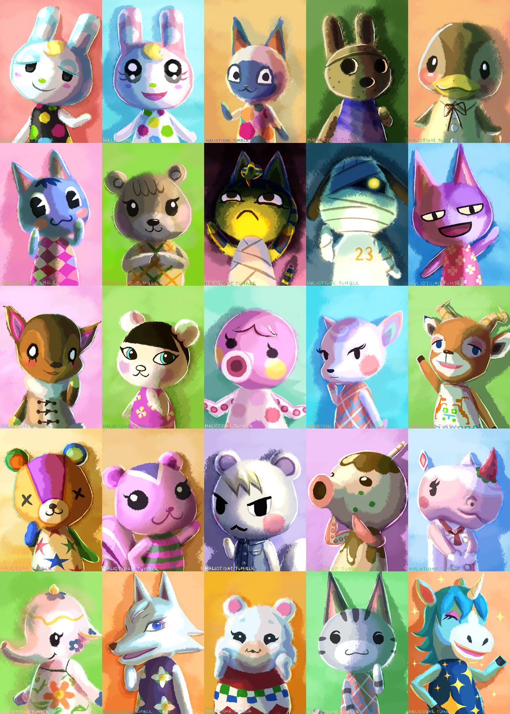

- Normale :
- Souriante, intelligente, gentille et timide, elle est soucieuse des autres. En bref, la fille parfaite !
- Arrogante :
- Elle est tout l'opposé de la personnalité normale. Elle aime se vanter, se maquiller et peut parfois être vexante
dans ses propos.
- Grande-soeur :
- Très protectrice avec vous. Elle est souvent excitée, aime se montrer et se vanter comme la personnalité chic.
- Vive :
- De nature très "speed", elle aime les commérages : raconter des ragots est sa spécialité ! Elle est très
immature et naïve.
|
 |
- Sportif :
- Très sûr de lui et à l'égo surdimensionné. Par moment énervant mais reste très amical !
- Paresseux :
- Généralement sensible, amical et timide. Doté parfois d'une âme d'enfant, il aime rester
chez lui avec ses jouets et adore la nourriture.
- Versatile :
- Il se met souvent en colère. De nature ronchon, il faut apprendre à le connaître.
Ce côté "méchant" le rend plus adulte.
- Chic :
- Il adore se montrer et se vanter de sa maison. Il aime s'auto-complimenter et ne jure que par lui-même.
|